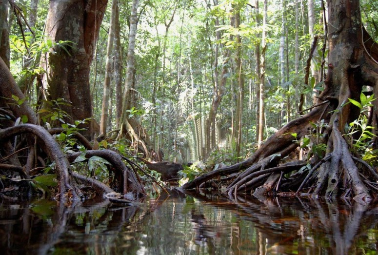

Флора сельви

Сельва — це унікальний світ рослин. Тут росте понад 40 000 видів рослин, з яких 75% не зустрічаються більше ніде.
Відомі рослини:
- Гевея — дає натуральний каучук.
- Бромелії — тримають воду в своїх листках.
- Сейба — дерево-велетень, висотою до 70 м.